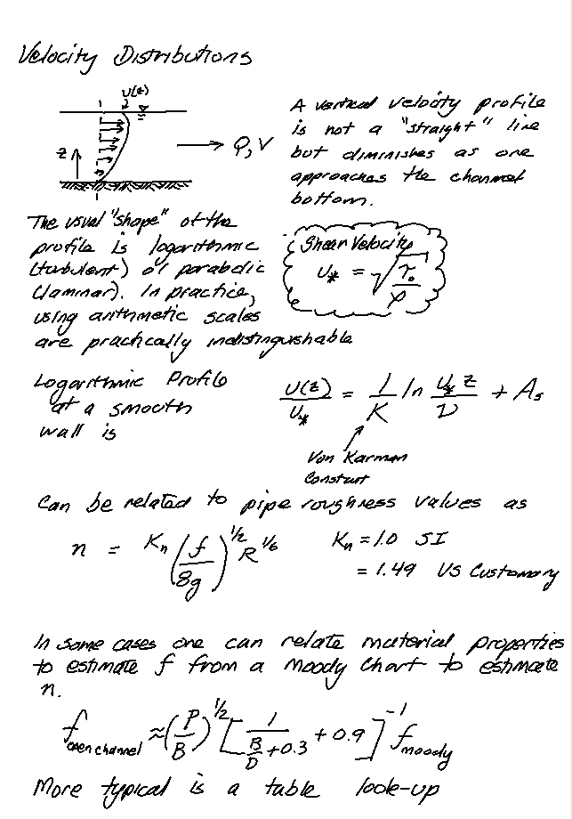
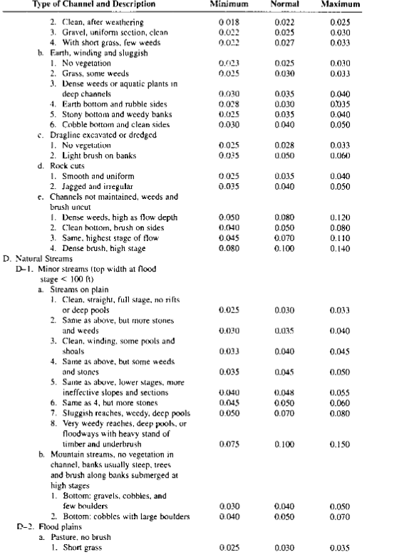
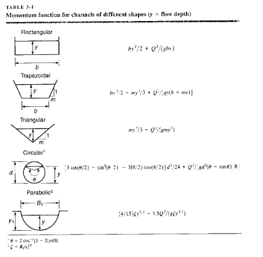

8. Open Channel Flow¶
This laboratory examines behavior in open channels, in particular determining Manning’s n for a portion of a channel, and cerating and observing the alternate and sequent depths in a hydraulic jump.
Background/Theory¶
Open channel flow - free surface, gravity driven.
From pg. 1 of Sturm, T. Open Channel Hydraulics, 1 st Ed.

Note
The gravity “drive” is mostly true - I would say such flows are dominated by momentum conditions, mostly with gravity influence. Open flow can go uphill (adverse to gravitational drive) but not for much distance (os one will run out of momentum)
Common examples of open channels:
rivers, streams, brooks, creeks, cricks (Applacian meaning small stream), billabongs, bourns, wadis, and many more localized terms for small streams
ditches, canals, aqueducts, storm sewers, sanitary sewers
From pg. 1 of Sturm, T. Open Channel Hydraulics, 1 st Ed.

Applications of open channel flow principles
Culvert design, bridge design, spillway design
Floodway analysis, and nusiance flooding prediction
Fate and transport of yummy/yucky stuff (dissolved and/or suspended)
Surge estimation and coastal flooding from cyclonic storms (hurricane,typhoon)
From pg. 1 of Sturm, T. Open Channel Hydraulics, 1 st Ed.
Natural and man-made open channels are of interest to engineers. The Manning’s equation is a fundamental equation governing open channel flow and is given by
Where \(K_n\) is the conversion factor (1 for SI and 1.49 for English units); \(n\) is the Manning’s roughness coefficient, \(A\) is the cross-sectional area and \(R\) is the hydraulic radius which is given as:
where \(P_W\) is the wetted perimeter.
Steady-Uniform Flow¶
Uniform flow occurs when the average velocities in successive cross sections of a channel are the same. This occurs only when the cross section is constant. Non-uniform flow results from gradual or sudden changes in the cross sectional area. If the water surface is parallel to the channel bottom, flow is uniform and the water surface is at normal depth \(y_n\)
Used for design of long open channels with the goal to have the water surface slope equal to the bed slope. Heres a couple of pictures,
First a Central Aridzona Project canal

And the Central Valley Project (Callyfornia) canal I grew up swimmin’ in.
The line of floaty balls means you are approaching one of these:

Even though swimmin’ in the canals is illegal, the operators dont want to turn a bunch of kids into fish food, so they put up the balls.
Note
Despite the obvious Darwinian advantage of grinding up kids - dead meat does not pay taxes; support old folks; nor serve as a supply of harvestable kidneys. Hence we try to save them.
In these applications the resistance to flow is balanced by a driving force provided by gravity.
Resistance is a consequence of cross-section shape, soil, vegetation, materials (in engineered channels). In pipelines the resistance was understood by laboratory experimenters by the 1930’s. In open channels interest started later
Note
Obviously people have built working open channels much earlier, but techniques of design were empirical passed down by secret societies who wore wizard hats and flew on brooms!
Consider a generic force balance diagram over a short section of channel, \(\Delta L\) long:

Now insert the Energy Grade Line (EGL)
In the case of uniform flow the flow depths are the same at each end of the section, the section length is such that the end areas are about the same, hence the upstream and downstream pressure force are the same, and the remaining forces are gravity (drive) and friction:
Note
In the above expression \(Fr\) is the frictional shear force, not the Froude number. Use the principle of algebraic substitution, and give friction any name you want in the drawing, except Elroy
If friction is stipulated to be generated only by the shear force induced at the solid-liquid interface (and not at the free surface) then the expression becomes
where \(P\) is the wetted perimeter
Divide by \(P \Delta L\) to obtain
observe the hydraulic radius, \(R_h = \frac{A}{P}\) appears
The boundary shear stress is the factor that expresses the resistance properties of the fluid (wasser) and the solid material (conduit wall). A usual simplification is to observe that the angle is usuall pretty small so that
In pipe flow (CE 3305) the shear stress was something like
Or more usefully (in that context)
And one either looked up a value in the Moody chart or applied Swammee-Jain equations to find \(f\) for various Reynolds numbers and material relative roughness.
Returning to our situation we have
So now we need some way to express \(f\).
Head Loss Models¶
Chezy Correlation
and the value \(C\) is the Chezy coefficient.
Manning Correlation
Manning several years before his football career developed a similar correlation but observed that the hydraulic radius varied by the 2/3 power as
There is meaningful theory to relate surface roughness to the “\(C\)” values

From here one can relate the friction factor back to Manning’s n or the Chezy coefficient:

The usual way to specify Manning’s n is by a table lookup such as http://54.243.252.9/toolbox/Databases/ManningN/ManningsN.html
or tables similar to those in our book


or by comparison with photographs of channels
Barnes, 1967 (A classic reference document) https://pubs.usgs.gov/wsp/wsp_1849/pdf/wsp_1849.pdf
and many others.
Normal Flow Calculations
where \(S_0\) is the bed slope, \(S_f\) is the slope of the energy grade line (called the friction slope).
Typical cases:
Know \(y_0\) or \(y_n\), shape, \(S_0\),\(n\), compute \(Q\) directly.
Know \(y_0\), shape, \(Q\),\(n\), compute \(S_0\) directly.
Know shape, \(Q\),\(n\),\(S_0\) compute \(y_0\) iteratively.
Steady-Rapid Varied Flow¶
Momentum is a property of moving things and is the product of mass and velocity. Angular momentum is the similar property in rotating geometries. It takes an external force to change the momentum of an object.
Note
Except at faster than light travel (FTL) when impulse-momentum no longer applies; instead ones survival depends largely on the skill of the scriptwriter. As engineers we wear the red shirts and are usually sacrificed, although Scottish engineers seem to last many episodes!
In the context of hydraulics many phenomenon which cannot be analyzed using the energy equation succumb nicely to momentum. The primary advantage of the momentum equation are that details of internal (to the control volume) flow patterns are irrelevant, only the external forces and momentum fluxes need to be considered. The momentum balance was used earlier to solve the head loss caused by a bridge pier and this is a typical application of momentum balances.
It matters greatly in computational hydraulics in unsteady flow.
Hydraulic Jump¶
A hydraulic jump occurs:
when you startle a sugary liquid, it jumps and spills.
when flow transitions for supercritical flow to subcritical flow over a short distance.
when a lowrider activates the car hydraulics and hops.
well for this lab its the second answer.
Note
The highest lowrider hop 414.65 cm (163.25 in) and was achieved by Robert White (USA) at the Los Magnificos car show in Austin, Texas, USA on 21 November 2015. The hop was made by a converted school bus called the Honeybadger.
Here’s a useful sketch. Supercritical flow upstream meets subcritical downstream. Downstream controls the flow, \(Q\) is same but the downstream velocity os exchanged for flow depth, a bit of energy is lost in the transition. The jump itself is quite turbulent and has a practical value in chemical mixing as well as energy dissipation.
Engineering design is typically concerned with forcing jumps in armored channel sections otherwise the energy will chew away at the channel and destroy thangs.
A control volume around the jump might look like

The jumps occur over a short distance, so the friction term is usually small compared to the other forces and change in momentum flux.
Conservation of momentum is
The pressure forces assume hydrostatic distributions so that
where \(\bar h_i\) is the depth to the centroid of the cross section (\(\frac{y}{2}\)
Making the substitutions and neglecting the friction term yields
Rearrangement gives
Divide by \(\rho~g\)
The result above is called the momentum function, and interestingly looks similar to the specific energy function with the section geometry explicitly part of the balance.
The balance is at the two sections implies that the two different depths have the same momentum function, and these are called the alternate (upstream) and sequent (downstream) depths.
The function itself is dependent on section geometry a few analytical examples are:

For other cross sections, numerical methods are employed.
Laboratory Apparatus¶
The apparatus is a recirculating water flume (photo below), width 1 ft, comprising a supply tank (in the flumw base) a head tank, two pumps, rectangular channel with side rails, depth gauges, total head tubes, bed tappings and downstream control gate.
Two parts of the experiment are :
measure depth and flow over a rock bed (already in the flume) and determine Manning’s n for the rock bed and compare to literature values, and
create a hydraulic jump (by using the tail-race valve), stabilizing it, then measuring the alternate and sequent depths and comparing these to calculated values based on the discharge.
Discharge Measurements¶
The flowrate is determined using the calibration chart below.

The y-axis is the difference of the manometers readings(\(\Delta H\)) and the x-axis is the flowrate (Q). The following equation belongs to the “Large Orifice” line on the chart.
Flow Depth Measurements¶
Flow depth measurements are made using a digital distance gage (a ruler widda digital readout) if the battery is dead, you will still uset the device but make manual measurements using a ruler from different device settings.
The digital device reports distnace from the rail top to the pointer setting (\(h_D\), in our case depth to water. The total depth of the channel is \(h_b\) = 44 mm. The flow depth is the difference in these readings.
A second reading is made when the V-notch weir is in place. It is used to check the pump flow calibration (it needs to be removed to create a stable hydraulic jump.
Procedure¶
Part 1 This part is to validate the flow calibration chart and equation. 0. Set the slope to 1-percent.
Ensure flume tailgate is down.
Close the red valves for both pumps.
Start the pumps.
Move the depth logger to the same elevation as the height of V notch and reset the value to zero.
Make sure the manometer valves corresponding to the selected orifice(s) is(are) open.
Ensure the manometers are free of air bubbles.
Open the red valve(s) to let flow into the flume.
Move the depth logger till it touches the top of the water level. Measure the height. Record this measurement.
Record the manometer readings for each pump.
Repeat the procedure for 4 different flowrates keeping the slope constant. Use the red valves to adjust flowrates.
Part2 This can be conducted with the weir in place
Move the depth logger to top of one of the rocks and reset the value to zero.
Make sure the manometer valves corresponding to the selected orifice is/are open
Ensure the manometers are free of air bubbles.
Open the Orifice to let flow into the flume
Move the depth logger till it touches the top of the water level. Measure the height
Repeat the procedure for 2 other flowrates keep the slope constant
Repeat the above steps for a total of 3 different slopes
Part 3 This part will create a stable hydraulic jump. It is easiest to remove the weir.
Shut down the pumps, close the red valves, and remove the weir - everything else can be left as-is.
Set the slope to 4-percent (its going to look steep, but the machine can handle it!)
Start the pumps (you can try with just a single pump if you wish).
Raise the tailgate a lot!
Zero the depth gage to the channel bottom.
Open the red valve(s) to start the flow.
Raise the headgate to just above the water height.
Lower the tailgate a little bit at a time - you will likely observe two jumps, one near the head gate and one after the rocks. The stable one is the one at the head gate.
Lower the headgate until it just touches the water surface - you are forcing supercritical depth at this location. You should be able to create a stable jump about 0.5 to 1-foot from the head gate, and the water surface after the jump should be fairly established at the rocks.
Record the manometer readings for the pump(s)
Measure the flow depth befor the jump (halfway between the headgate and the jump should do). This is the alternate depth.
Measure the flow depth after the jump where the surface waves have dissipated (probably at the rocks). This is the sequent depth.